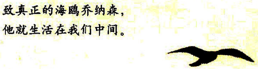

海鸥乔纳森
作者： [美]理查德·巴赫

许多年来，这本感动心灵、催人奋进的小书，以飞翔之姿传遍欧洲、非洲、亚洲、澳洲等近50个国家和地区，
以形形色色的语言讲述同一个“飞翔的梦想”。
总结：对梦想的执着追求，辛勤的努力，角色转变所带来对事物进行观察视角的转变等等因素都会成为一个
追求成功者的宝贵品质。有的时候我们没必要去羡慕那些 想活的自由活的超凡的人，关键是我们得向
着我们想要的生活的方向 努力改变自身，当合适的机遇出现的时候，我们就会觉悟然后就可以过上这
种想要的生活。从另一方面来看，我们每个人都有成为非凡的品质，所以我们不要轻易否定自己。
第一章
讲述乔纳森热爱飞翔，而鸥群中其他绝大多数的海鸥都只是满足于简单的飞到岸边觅食。
在他追求飞翔的过程中，不断的调整自己，同时承受住了现实的压力最后成功的达到了自己的终极速度。
当他成功的时候，他意识到：“我们可以自由！可以学会飞翔！”
在他着陆后，没想到却被长老召开的海鸥审议大会宣布逐出鸥群！说他冒犯了海鸥全族的尊严和传统。
乔纳森辩驳道：“谁还能比探索和追求一种生活意义，一种更高的生活目标更负责任？我们抢吃鱼头已经有
千年了吧，但是现在我们有了更好的生活理由——学习，发现，自由！”
最终乔纳森被逐出了鸥群变成了一个流浪者，但是乔纳森幸运的遇到了来自于"天堂"拥有高超飞行技巧的"他
们"。
第二章
乔纳森来到了自以为是"天堂"的地方，并开始渐渐融入到这个地方准备学习更多的飞翔知识。
乔纳森认了沙利文做为自己的飞行老师。并见到了新世界的长老吉昂，乔纳森问吉昂关于天堂的事情，吉昂
用一种极快的飞行来做为行动上的回答，使得乔纳森又被这种转瞬间想要去哪就去哪的飞行技巧震惊了。
长老吉昂教导乔纳森："想要飞多快就多快，要去哪里就去哪里，首先你必须知道自己已经到达那里了......"
长老并时常提醒他："要忘掉信念！飞翔无需信念，只需理解。"
在乔纳森成功达到这一境界之后，长老又说："我们可以来研究时间了。等你能够在过去和将来之间穿行，
你就可以开始学习最难，也是最有力，最有趣的一种飞行技巧了。然后你就会准备好高飞，懂得慈悲
和爱的意义！" 长老最后的话："乔纳森，继续努力学习去爱。"
接着乔纳森的角色转变了，他遇到了一个像他一样被驱逐出鸥群的海鸥福来奇，他开始要教福来奇飞翔。
第三章
乔纳森开始陆续的接纳那些因对飞翔的乐趣以及自由的想法有追求而被驱逐出鸥群的海鸥做为自己传授飞行技
巧的学徒。
当教好了他们这些技巧之后，为了爱，乔纳森做出了一个大胆的决定——要飞回到鸥群中去，帮助他们学习。
他想要用他们高超的飞行技巧来教导鸥群中的海鸥们要追寻自由！
乔纳森想要传播追求自由的想法最终还是被现实给打败了，乔纳森弄不明白: "为什么世界上最难的事是让一只
鸟相信他是自由的呢？只要花一点时间学习，他自己也可以证明，为什么就这么难办？" 最终乔纳森虽然懂得了
什么是爱，但是他没能够用爱来解决大众，只能选择离开。
在乔纳森要离开之时，他决定让福来奇带领整个鸥群飞向同一个目标。最后乔纳森自己也变成了那个像长老吉昂
一样去往更高境界的"神灵"，他教导福来奇，要更多的寻找自我，那个真正的、能力无限的海鸥福来奇，他才是
你的老师，你需要懂得他，学习他。要懂得：不要仅仅相信你的眼睛所看到的东西，它们能够显示的极其有限，
要学会用你的悟性去看，找出你已经知道的东西，然后，你会发现飞翔的真理！
最后福来奇在当老师的时候，终于明白了乔纳森和自己所说过的那些话，他突然觉得自己看到了这群海鸥的真正
面貌。一刹那，他发觉自己不止喜欢他们，而且还深深的爱着他们。